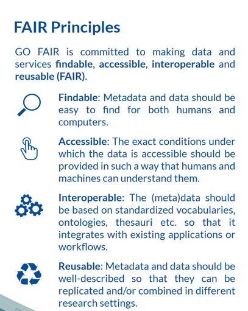

flowchart LR; I1(Analysis Notebook) -. data+code included in ref 26 .-> Z2[REF 26: Reproducibility Package archived on Zenodo <br> 'Universitat Jaume I Research Data' Community] click Z2 "https://zenodo.org/records/5032028" I1 == input ==> A((PAPER in PDF)) click A "https://doi.org/10.1016/j.pmcj.2022.101550" A == output: software ==> O1(NTD Software) A == output ==> O2(Fig 4) A == output ==> O3(Fig 5) A == output ==> O4(Other figs) O1 -. in ref 21 .-> Z1[NTD Software archived on Zenodo] O2 -. in ref 26 .-> Z2 click O2 "https://ars.els-cdn.com/content/image/1-s2.0-S1574119222000074-gr4_lrg.jpg" O3 -. in ref 26 .-> Z2 click O3 "https://ars.els-cdn.com/content/image/1-s2.0-S1574119222000074-gr5_lrg.jpg" Z1 -. based on .-> G1[Github Repo] click Z1 "https://zenodo.org/records/6477770" click G1 "https://github.com/GeoTecINIT/nativescript-task-dispatcher" Z2 -. based on .-> G2[Github Repo] click G2 "https://github.com/GeoTecINIT/nativescript-journalpaper" classDef key fill:#aaaaaa,stroke-width:4px class A,O2,O3 key
During analysis
Data/coding practices and tools
Carlos Granell
GEOTEC, Universitat Jaume I
Apr 22, 2024
[#11] Open data != reproducible data
Open != reproducible
“Openness and Open Science (data sharing, code sharing, open access, etc.) are enablers of reproducibility, but do not necessarily guarantee it” (Chiarelli, Loffreda, and Johnson 2021)
Open != Good (of high academic quality)
Reproducible != Good (of high academic quality)
Open != reproducible
[#12] Data (required) for reproducibility
Data for reproducibility
If datasets are valuable contributions by themselves (Noy and Goble 2023)
Go to Recomendation #13
Data for reproducibility
If datasets are meaningless outside of the accompanying article (Noy and Goble 2023)
Reproducibility means access to the required datasets to recreate the reported results
Access does not necessarily imply that datasets are open or citable or discoverable by themselves
Recommended: Deposit reproducibility package (data, code, docs) on Zenodo or similar rather than supplementary material tied to the paper
Data for reproducibility: Example
Using mobile devices as scientific measurement instruments: Reliable android task scheduling
[#13] Be (data) FAIR, my friend
(Data) FAIR principles

Emphasis on identifiers, metadata, standards, licenses, permanence (Wilkinson et al. 2016)
Analysis on metadata standards for reproducible research (Leipzig et al. 2021)
Ten simple rules for credit data (Wood-Charlson et al. 2022)
(Data) FAIR
If datasets are valuable contributions by themselves (Noy and Goble 2023)
Datasets should be findable, accessible, interoperable, and reusable
Datasets are first-class citizen in scientific discourse…
…so others can reuse, cite, evaluate, create value based on them to advance knowledge
(Data) FAIR
Findable: DOI/Handler (when deposited) + metadata (
READMEfile) + deposit (institutional/general/thematic repositories)Accessible: standard protocol (HTTP,…) + how-to-access info (
READMEfile) + depositInteroperable: Open formats + standard schema or vocabularies + deposit
Reusable: Open license + deposit
(Data) FAIR in GIScience
Coalition for Publishing Data in the Earth and Space Sciences (COPDESS):
All journals in geosciences require authors to make all data that supports the conclusions in their papers available in publicly accessible repositories that follow the FAIR principles
All data? 😧
(Data) FAIR according to UJI
Declaració institucional a favor de la promoció de l’accés obert a la Universitat Jaume I
Los datos de investigación deberán ser FAIR (findable, accessible, interoperable and reusable) e ir acompañados de una licencia estándar que indique explícitamente las condiciones de uso y favorezca la reproductibilidad científica
All data? 😨
(Data) FAIR according to UJI
Código de Buenas Prácticas en Investigación y Doctorado
El personal investigador de la Universitat Jaume I […] garantizará la adecuada gestión y conservación de los datos de investigación (datasets) para cumplir siempre que sea posible con los principios FAIR, esto es, que dichos datos puedan ser localizables, accesibles, interoperables y reutilizables
¡¡siempre que sea posible!! 🤪
A (personal) view on #13 and #14
Is a dataset a valuable contribution of your paper? Are you going to exploit it in various experiments?
- Invest time to make it FAIRable
Does a dataset play a supporting role in your paper? Does it make sense only for one particular paper/experiment?
- Take it easy, my friend: Document (
READMEfile), pick a licence, and archive on Zenodo
[#14] Use open source tools whenever possible
Instead of
- ArcGIS
- Google Maps/Places
- Stata, SPSS
- Excel
Use
- QGIS
- OpenStreetMap
- Python, R, …
- or combination of commercial-open tools
Example
ArcGIS Python Notebooks: Mixed approach to make the implicit (click-based analytical workflow) explicit (code-based analytical workflow)
[#15] Learn/use scripting languages
Scripting languages
Play with data, measure & explore, distrust of your intuition
R/Python scripts describe every step of an analysis
- Descriptive-based analysis (vs. click-based) of what your analysis does
Others can understand WHAT and HOW has been done (Remember: ‘Show me’, not ‘trust me’)
Tips
Look at section During analysis: best coding practices in (Alston and Rick 2021)
[#16] Learn/use computational notebooks
Computational notebooks
A computational notebook is a (cloud-based/local) editor composed of cells, which is used for literate programming
Each cell may contain:
- narrative/text/documentation, or
- executable code (python, R, …), or
- results as code output (charts, tables, plots, maps, …)
Computational notebooks as first-class citizens
EarthCube annual meetings include a call for notebooks (CFN 22 as peer-reviewed submissions - See Notebooks 2022 proceedings
American Geophysical Union (AGU)’s Notebooks Now! (Caprarelli et al. 2023)
Urban Data/Code submissions to Environment and Planning B: Urban Analytics and City Science
Master/PhD theses as computational notebooks?
Computational notebooks: examples
JupyterLabs, RMarkdown, Quarto, Google Colab, Matlab Live Scripts, Wolfram, see more in Wikipedia
(Pimentel et al. 2019) studied 1.4 millions of notebooks (GitHub)
- Only 24% ran without exceptions
- Only 4% produced same results
- Conclusions: best practices for the reproducibility of notebooks
[#17] Preserve computational environment
Manage packages/libraries dependencies
- document/manage specific versions of all packages and dependences used in a project
renvfor R orvenvfor Python. See post onrenvusage
- complement them with best coding practices (setting a seed, etc.)
[#18] Learn/use containerisation tools
Container tools
Beyond package management tools…
Docker and family tools (Nüst et al. 2020)
Binder deploys a cloud-based docker container based on a git repo
repo2dockerfetches a git repository and builds a container image based on the configuration files found in the repository
[#19] Be (software) FAIR, my friend
(Software) FAIR
Document your source code (Barker et al. 2022), (Hasselbring et al. 2020)
Findable: Deposit source code in a repository that provides DOIs and metadata
Accessible: Able to download source code
Interoperable: Use open source programming languages and software
Reusable: Release software under an open usage license
(Software) FAIR according to UJI
Declaración institucional a favor de la promoción del acceso abierto en la Universitat Jaume I
Nothing
Código de Buenas Prácticas en Investigación y Doctorado
La Universitat Jaume I […] adoptará medidas para facilitar al personal investigador el depósito de […] herramientas de código abierto en acceso abierto en el repositorio institucional o específico
(Software) FAIR according to UJI
El investigador o investigadora deberá decidir si comparte el código (software) desarrollado en su trabajo. Para ello tendrá en cuenta si la comunidad científica puede beneficiarse de dicho trabajo, o en aras a una mayor reproducibilidad de su trabajo. En tales casos, podría ser conveniente publicarlo con una licencia adecuada que proteja la autoría y derechos. La publicación del código podría restringirse si el investigador o investigadora tiene perspectivas futuras de comercialización o si el código incluye secretos comerciales o registrados.
[#20] Make use of Make
GNU Make is +40 years old but still relevant today
coordinates and automates command-line processes, such as a series of independent scripts
provides “one-entry” point to your analysis
Tips/Readings
SnakeMake: Python alternative to Make
References
Alston, Jesse M., and Jessica A. Rick. 2021. “A Beginner’s Guide to Conducting Reproducible Research.” The Bulletin of the Ecological Society of America 102 (2): e01801. https://doi.org/10.1002/bes2.1801.
Barker, Michelle, Neil P. Chue Hong, Daniel S. Katz, Anna-Lena Lamprecht, Carlos Martinez-Ortiz, Fotis Psomopoulos, Jennifer Harrow, et al. 2022. “Introducing the FAIR Principles for Research Software.” Scientific Data 9 (1). https://doi.org/10.1038/s41597-022-01710-x.
Caprarelli, Graziella, Brian Sedora, Mia Ricci, Shelley Stall, and Matthew Giampoala. 2023. “Notebooks Now! The Future of Reproducible Research.” Earth and Space Science 10 (12). https://doi.org/10.1029/2023ea003458.
Chiarelli, Andrea, Lucia Loffreda, and Rob Johnson. 2021. “The Art of Publishing Reproducible Research Outputs: Supporting emerging practices through cultural and technological innovation.” Zenodo. https://doi.org/10.5281/zenodo.5521077.
Hasselbring, Wilhelm, Leslie Carr, Simon Hettrick, Heather Packer, and Thanassis Tiropanis. 2020. “Open Source Research Software.” Computer 53 (8): 84–88. https://doi.org/10.1109/MC.2020.2998235.
Leipzig, Jeremy, Daniel Nüst, Charles Tapley Hoyt, Karthik Ram, and Jane Greenberg. 2021. “The Role of Metadata in Reproducible Computational Research.” Patterns 2 (9): 100322. https://doi.org/10.1016/j.patter.2021.100322.
Noy, Natasha, and Carole Goble. 2023. “Are We Cobblers without Shoes?” Communications of the ACM 66 (1): 36–38. https://doi.org/10.1145/3528574.
Nüst, Daniel, Vanessa Sochat, Ben Marwick, Stephen J. Eglen, Tim Head, Tony Hirst, and Benjamin D. Evans. 2020. “Ten Simple Rules for Writing Dockerfiles for Reproducible Data Science.” PLOS Computational Biology 16 (11): 1–24. https://doi.org/10.1371/journal.pcbi.1008316.
Pimentel, João Felipe, Leonardo Murta, Vanessa Braganholo, and Juliana Freire. 2019. “A Large-Scale Study about Quality and Reproducibility of Jupyter Notebooks.” In 2019 IEEE/ACM 16th International Conference on Mining Software Repositories (MSR), 507–17. https://doi.org/10.1109/MSR.2019.00077.
Smith, AM, DS Katz, and KE Niemeyer. 2016. “Software Citation Principles.” PeerJ Computer Science 2: e86. https://doi.org/10.7717/peerj-cs.86.
Wilkinson, Mark D., Michel Dumontier, IJsbrand Jan Aalbersberg, Gabrielle Appleton, Myles Axton, Arie Baak, Niklas Blomberg, et al. 2016. “The FAIR Guiding Principles for Scientific Data Management and Stewardship.” Scientific Data 3 (1). https://doi.org/10.1038/sdata.2016.18.
Wood-Charlson, Elisha M., Zachary Crockett, Chris Erdmann, Adam P. Arkin, and Carly B. Robinson. 2022. “Ten Simple Rules for Getting and Giving Credit for Data.” PLOS Computational Biology 18 (9): 1–11. https://doi.org/10.1371/journal.pcbi.1010476.